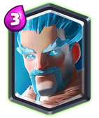

Legendary Card: Ice Wizard

A simple change in Ice Wizard stats just changed the position of this card in the meta.
You can’t say that Ice Wizard was buffed as it also simultaneously nerfed by making his hit speed slower. Rather, Supercell re-balanced this card as it has same HP and almost same DPS, but the 10% damage increase turned the whole thing around.
Now being able to one-shot Skeletons and Bats as well as 3 shot Minions and Archers he has become a better defensive-swarm clearing option.
He surprisingly found place in the siege archetype along with X-bow. It also has given rise to a better defensive Miner Poison cycle decks. Being better at countering at Graveyard now, this card is just too versatile yet not OP.
However, this Snowbow deck quickly lost its popularity as the meta transformed into a P.E.K.K..A. and MK meta which are both hard counter to X-bow. Other than this Ice Wiz sees usage, but eWiz is a better support to be honest.